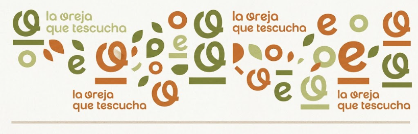

Nuestro equipo a su disposición
Contamos con profesionales altamente capacitados y comprometidos con brindarte la mejor atención, empatía y orientación en los momentos en que más lo necesitas

Compromiso y calidez humana al servicio de tu bienestar mental.
Sobre nosotros
La Oreja que Tescucha surje como respuesta a la necesidad de aquellos pacientes que sienten no ser escuchados por sus seres cercanos. Muchos de ellos expresan que al finalmente ser escuchados, se sienten juzgados. En este espacio de contención ofrecemos un entorno para que el paciente sea libre de expresar sus sentimientos sin el temor a sentirse rechazado. Trabajando un paso a la vez, buscamos canalizar esas emociones para lograr una mejora en la calidad de vida del paciente, permitiendo retomar el control de su vida y bienestar emocional.
Nuestros Pilares y Modalidades de Atención
Acompañamiento profesional
Un abordaje terapéutico basado en el respeto y el rigor clínico, diseñado para guiarte en cada etapa de tu proceso personal.
Espacio seguro
Un entorno libre de juicios donde la confidencialidad y la tranquilidad son la base para que puedas expresarte con total libertad.
La asistencia que necesitas
Planes de atención personalizados que se adaptan a tus tiempos, necesidades emocionales y objetivos de vida.
Terapia presencial
Encuentros individuales en nuestro consultorio, brindando cercanía física y un clima propicio para la introspección.
Terapia virtual
La misma calidad y calidez profesional desde la comodidad y privacidad de tu hogar, sin importar la distancia.
Taller de Terapia Cognitiva Conductual
Con ejercicios de psicología de la Gestalt
Contactanos
Estamos aquí para escucharte. Da el primer paso hacia tu bienestar:
NUMERO DE TELEFONO: +54 15 3330-2000